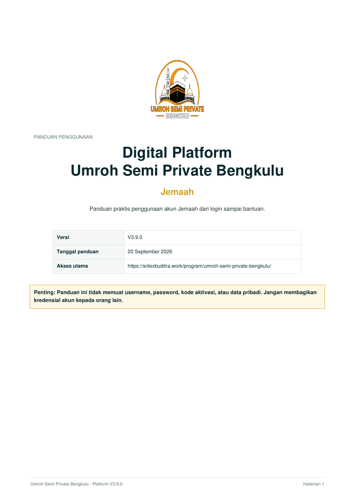
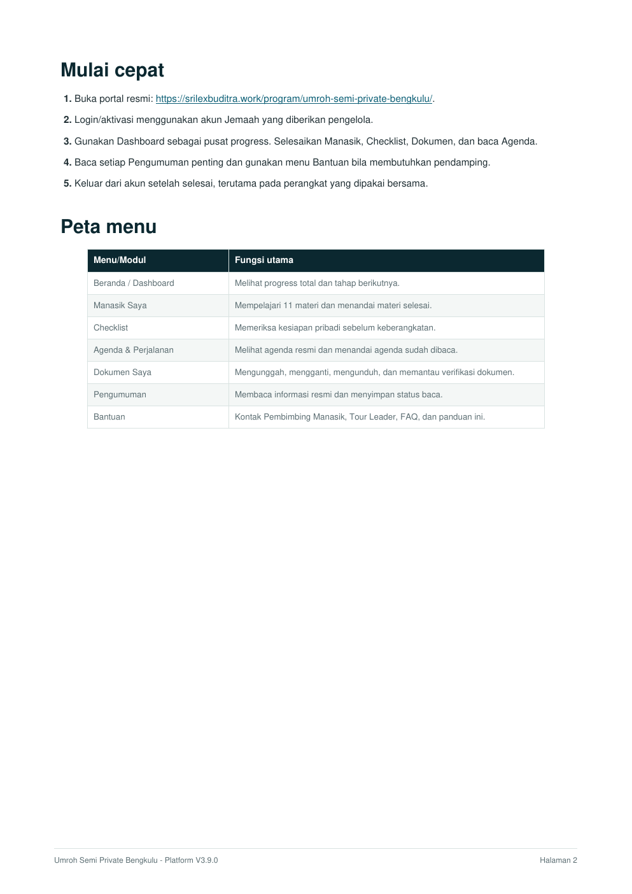
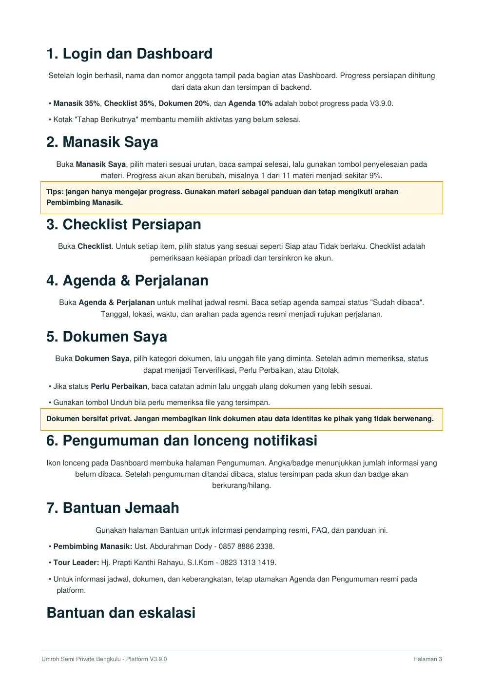
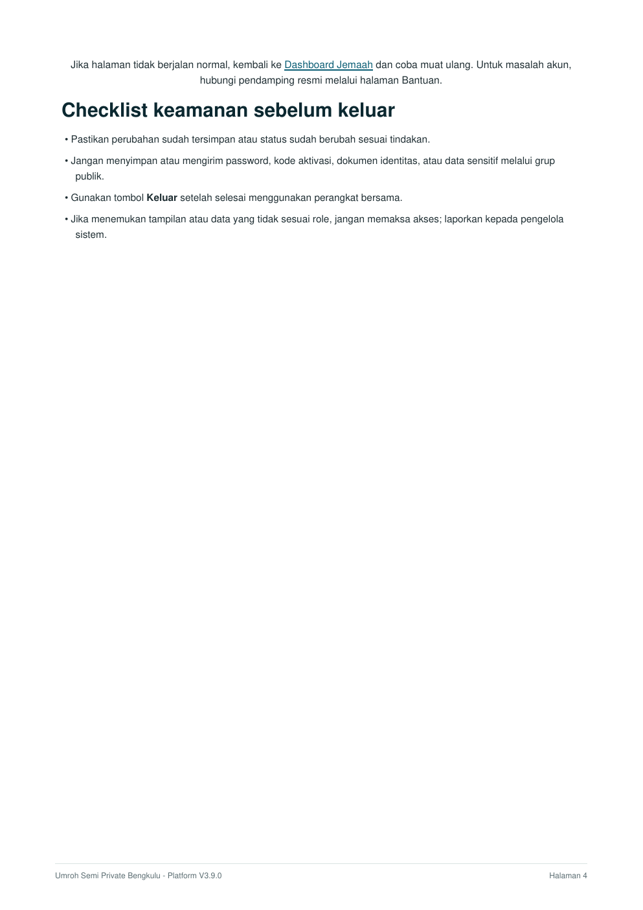

Pembimbing ManasikUst. Abdurahman Dody
Untuk pertanyaan terkait materi manasik, tata cara ibadah, dan arahan pelaksanaan ibadah.
0857 8886 2338
Gunakan halaman ini untuk mengetahui pendamping resmi, jalur informasi, dan jawaban singkat atas hal yang paling sering dibutuhkan selama persiapan perjalanan.
Untuk pertanyaan terkait materi manasik, tata cara ibadah, dan arahan pelaksanaan ibadah.
Untuk informasi rombongan, titik kumpul, perjalanan, agenda, dan koordinasi keberangkatan.
Buka menu Agenda & Perjalanan. Jadwal yang dipublikasikan pengelola menjadi acuan utama.
Buka Dokumen Saya untuk melihat status dokumen, hasil verifikasi, dan catatan perbaikan jika ada.
Buka Pengumuman. Status baca tersimpan pada akun agar informasi penting dapat ditelusuri kembali.
Gunakan menu Checklist dan selesaikan materi Manasik Saya secara bertahap.
Utamakan pengumuman dan agenda resmi pada platform serta arahan langsung dari pengelola, Pembimbing Manasik, atau Tour Leader.
Kembali ke Dashboard dan pastikan sesi akun masih aktif. Untuk masalah akses yang tidak dapat diselesaikan, hubungi Pembimbing Manasik atau Tour Leader melalui kontak resmi pada halaman ini.
Panduan ini menjelaskan login, Dashboard, Manasik, Checklist, Agenda, Dokumen, Pengumuman, Bantuan, dan cara keluar akun secara bertahap.




Preview di atas dapat dibaca langsung tanpa PDF viewer. Gunakan Buka PDF untuk versi dokumen asli atau Download PDF untuk menyimpannya.